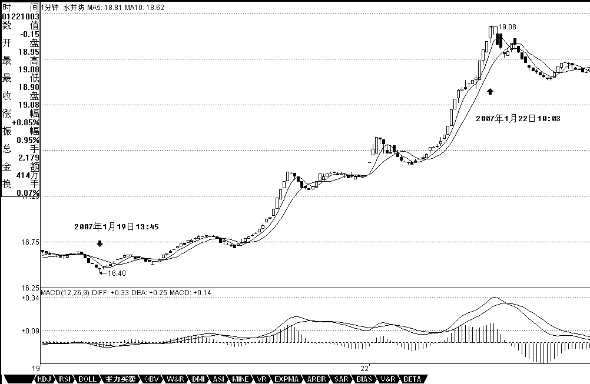
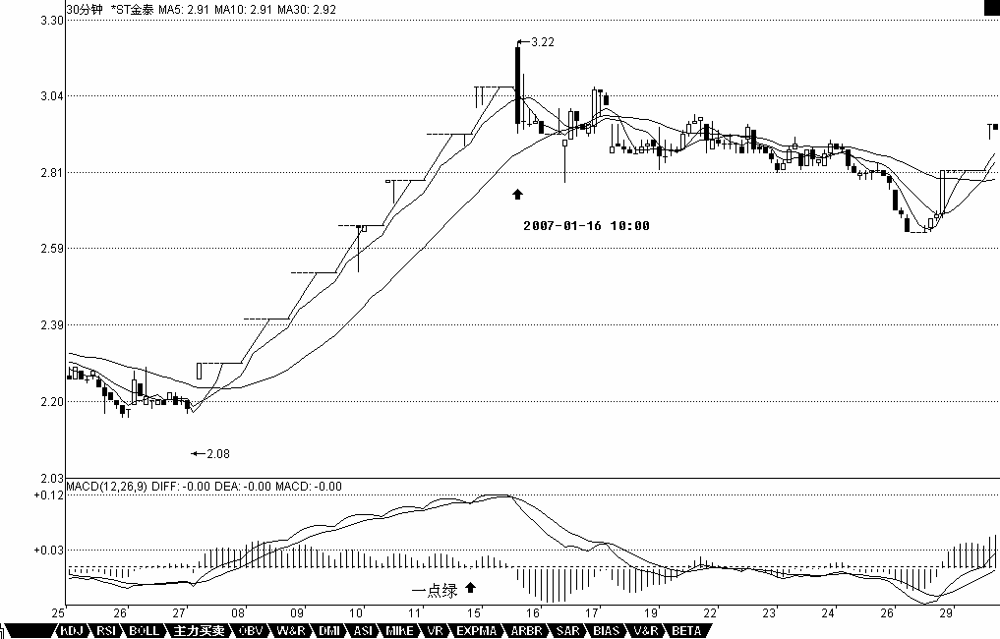
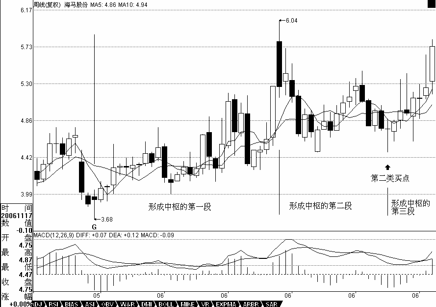
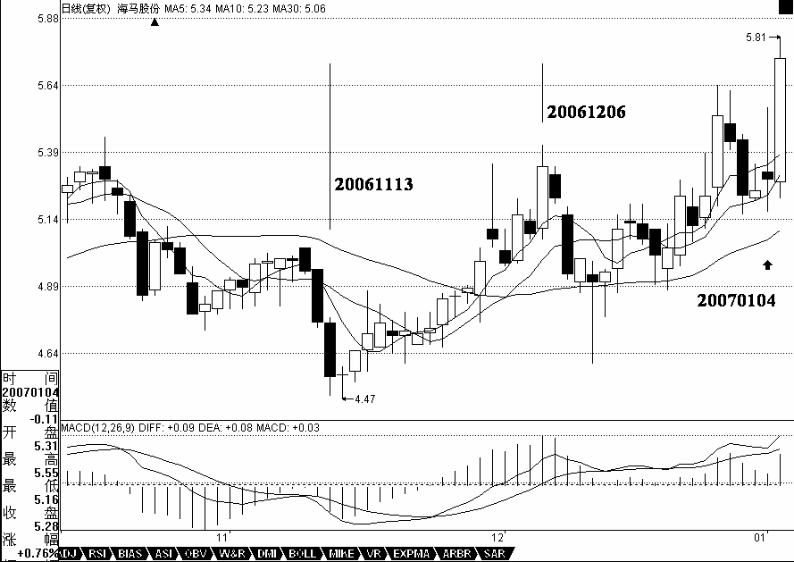

教你炒股票25：吻，MACD、背弛、中枢
日期：(2007-01-23 15:13:13) 分类：[时政经济（缠中说禅经济学）]
发现很多人把以前的东西都混在一起了，所以先把一些问题再强调一下。所谓的“吻”，是和均线系统相关的，而均线系统，只是走势的一个简单数学处理，说白了，离不开或然率，这和后面所说的中枢等概念是完全不同的，所以一定要搞清楚，不要把均线系统和中枢混在一起了。均线系统，本质上和MACD等指标是一回事，只能是一种辅助性工具。由于这些工具比较通俗，掌握起来比较简单，如果不想太深研究的，可以先把这些搞清楚。

【编者注：此图可能是当时的网友补充的】
但“学如不及”，对事情如果不能穷根究底，最终都是“犹恐失之”的，因此，最终还是要把中枢等搞清楚。MACD，当一个辅助系统，还是很有用的。MACD的灵敏度，和参数有关，一般都取用12、26、9为参数，这对付一般的走势就可以了，但一个太快速的走势，1分钟图的反应也太慢了，如果弄超短线，那就要看实际的走势，例如看600779的1分钟图，从16。5上冲19的这段，明显是一个1分钟上涨的不断延伸，这种走势如何把握超短的卖点？不难发现，MACD的柱子伸长，和乖离有关，大致就是走势和均线的偏离度。打开一个MACD图，首先应该很敏感地去发现该股票MACD伸长的一般高度，在盘整中，一般伸长到某个高度，就一定回去了，而在趋势中，这个高度一定高点，那也是有极限的，一般来说，一旦触及这个乖离的极限，特别是两次或三次上冲该极限，就会引发因为乖离而产生的回调。这种回调因为变动太快，在1分钟上都不能表现其背驰，所以必须用单纯的MACD柱子伸长来判断。注意，这种判断的前提是1分钟的急促上升，其他情况下，必须配合黄白线的走势来用。从该1分钟走势可以看出，17。5元时的柱子高度，是一个标杆，后面上冲时，在18。5与19元分别的两次柱子伸长都不能突破该高度，虽然其形成的面积大于前面的，但这种两次冲击乖离极限而不能突破，就意味着这种强暴的走势，要歇歇了。
还有一种，就是股票不断一字涨停，这时候，由于MACD设计的弱点，在1分钟、甚至5分钟上，都会出现一波一波类似正弦波动的走势，这时候不能用背弛来看，最简单，就是用1分钟的中枢来看，只要中枢不断上移，就可以不管。直到中枢上移结束，就意味着进入一个较大的调整，然后再根据大一点级别的走势来判断这种调整是否值得参与。如果用MACD配合判断，就用长一点时间的，例如看30分钟。一般来说，这种走势，其红柱子都会表现出这样一种情况，就是红柱子回跌的低点越来越低，最后触及0轴，甚至稍微跌破，然后再次放红伸长，这时候就是警告信号，如果这时候在大级别上刚好碰到阻力位，一但涨停封不住，出现大幅度的震荡就很自然了。例如600385，在2。92那涨停，MACD出现一点的绿柱子，然后继续涨停，继续红柱子，而3。28元是前期的日线高位，结果3。22涨停一没封住，就开始大幅度的震荡。

【编者注：此图可能是当时的网友补充的】
注意，如果这种连续涨停是出现在第一段的上涨中，即使打开涨停后，震荡结束，形成一定级别的中枢后，往往还有新一段的上涨，必须在大级别上形成背驰才会构成真正的调整，因此，站在中线的角度，上面所说的超短线，其实意义并不太大，有能力就玩，没能力就算了。关键是要抓住大级别的调整，不参与其中，这才是最关键的。
此外，一定要先分清楚趋势和盘整，然后再搞清楚背驰与盘整背驰。盘整背驰里的三种情况，特别是形成第三类买点的情况，一定要搞清楚。注意，盘整背驰出来，并不一定都要大幅下跌，否则怎么会有第三类买点构成的情况。而趋势中产生的背驰，一定至少回跌到B段中，这就可以预先知道至少的跌幅。
对背驰的回跌力度，和级别很有关系，如果日线上在上涨的中段刚开始的时候，MACD刚创新高，红柱子伸长力度强劲，这时候5分钟即使出现背驰，其下跌力度显然有限，所以只能打点短差，甚至可以不管。而在日线走势的最后阶段，特别是上涨的延伸阶段，一个1分钟的背驰足以引发暴跌，所以这一点必须多级别地综合来考察，绝对不能一看背驰就抛等跌50%，世界上哪里有这样的事情。
一般来说，一个标准的两个中枢的上涨，在MACD上会表现出这样的形态，就是第一段，MACD的黄白线从0轴下面上穿上来，在0轴上方停留的同时，形成相应的第一个中枢，同时形成第二类买点，其后突破该中枢，MACD的黄白线也快速拉起，这往往是最有力度的一段，一切的走势延伸等等，以及MACD绕来绕去的所谓指标钝化都经常出现在这一段，这段一般在一个次级别的背驰中结束，然后进入第二个中枢的形成过程中，同时MACD的黄白线会逐步回到0轴附近，最后，开始继续突破第二个中枢，MACD的黄白线以及柱子都再次重复前面的过程，但这次，黄白线不能创新高，或者柱子的面积或者伸长的高度能不能突破新高，出现背驰，这就结束了这一个两个中枢的上涨过程。明白这个道理，大多数股票的前生后世，一早就可以知道了。

【编者注：此图可能是当时的网友补充的】
用最近涨得最厉害的一个股票来说明，000572。该股票的力度，其实是和他在日线与周线上出现双重的第二类买点有关，相应地，就有了MACD双重在0轴停留形成第一个中枢的情况。在周线上，该股从20051209到20060714，形成第一段，同时MACD也回到0轴上面。其后就开始形成第一个中枢，最终在20061117形成第二类买点，同时，黄白线在0轴附近横盘。然后，开始逐步摆脱该中枢，黄白线也逐步拉起。在日线上，这个过程也是一样的， 20061113到20061206，形成日线上的第一段，同时MACD回到0轴上面。然后三段回拉在20070104结束，形成第一个中枢，其后突破中枢，MACD在0轴附近拉起，摆脱第一个中枢。该股以后的走势就很简单了，首先形成一个至少是日线级别的新中枢，同时MACD回抽0轴，然后再突破，出现背驰，构成一个大调整，从而导致一个至少周线以上级别的中枢，使得MACD出现回拉0轴，然后再拉起来，出现背驰，其后的调整就大了去了，至少是月线级别的。

【编者注：此图可能是当时的网友补充的】
必须注意，MACD在0轴附近盘整以及回抽0轴所形成的中枢，不一定就是相应级别的中枢，而是至少是该级别的中枢。例如日线MACD的0轴盘整与回拉，至少构成日线的中枢，但也可以构成周线的中枢，这时候就意味着日线出现三段走势。